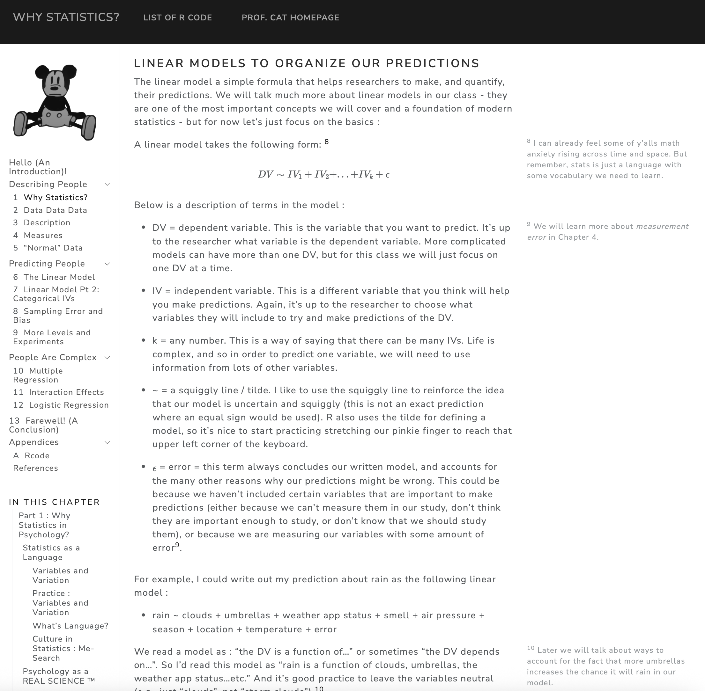
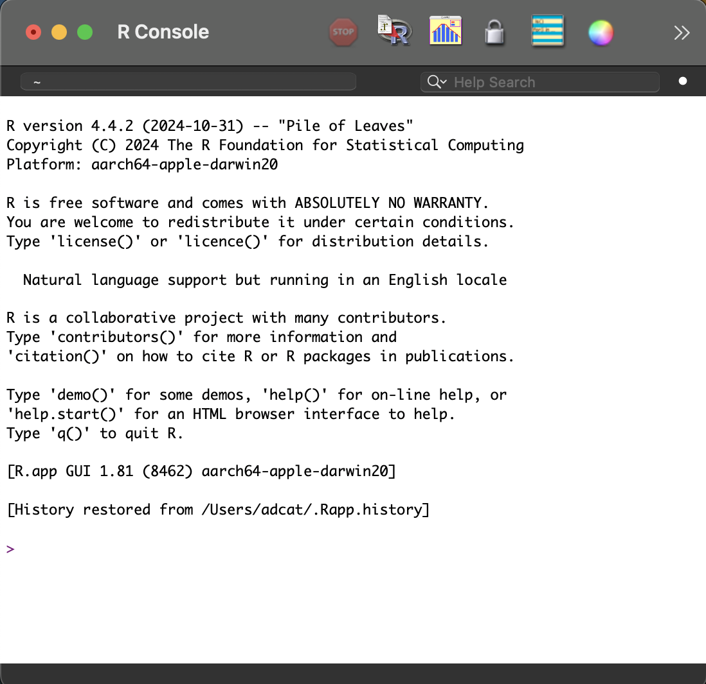
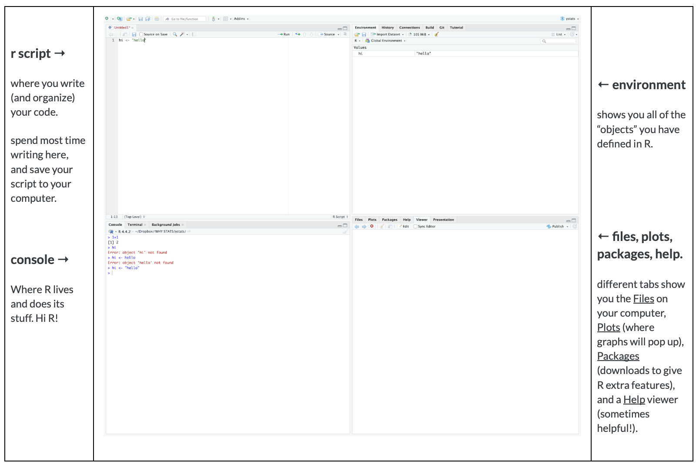

Welcome to Psych 101
Welcome to Psych 101
- take this quick check-in survey : tinyurl.com/hifirstclass
- access these lecture notes here : tinyurl.com/hipsychstats

Announcements
- Section Swap : post on bCourses to find someone to swap with.
- Waitlisted Students : Thanks for your patience! Go bears…
- Join the Class Discord : link on bCourses
- Next Week :
- Attend Discussion Section
- Read Chapter 1
- Complete Quiz 1
Agenda
10 Minutes : Check-In
45 Minutes : Who and Why and What Statistics?
10 Minutes : Break Time
45 Minutes : Why R?
Part 1 : Who and Why and What Statistics?
Who Statistics?
Professor : Arman (Daniel) Catterson
say : Arman…Professor…Professor Catterson…Dr. Catterson
from : Austin, TX to UC Berkeley to stayin in the bay forever 😎 teaching here as an adjunct and full-time at Diablo Valley College.

Students : THIS CLASS IS FOR Y’ALL!!!
attendance is critical, especially when you are behind.
your voice is needed.
in psychology : majority of authors (and editors who control research) are white.
in the classroom : we learn from each other.
clap once if you are here….
all talk at once :)
look around the room

Buddy System
everyone has a buddy
talk to your buddy in this class
ICE BREAKER : Why did you sit in this seat on the first day of class? What went into that decision?
Why Psych 214? Why are psych majors are REQUIRED to take a stats class 😈 ??
Why Statistics?
Statistics as a language.
- What happens in a good language class?
Variables and Variation.
variation : change, differences, growth, complexity
zero variation. everyone is the same. :(
life is complex. and statistics is about defining that complexity
variable : a thing that varies.

the ABCs of Psychology
Affect : the emotions you feel
Behavior : the things you do
Cognition : the ideas (or brain activation) you think
EXAMPLE : how can we think of happiness in terms of…..
Affect :
Behavior :
Cognition :
Goal of Science.
to describe variation
to make predictions [see Chapter 1]

What Statistics?
This Semester
Psych 101 :
flipped classroom. Readings before class; class time to practice and discuss.
We have a syllabus. Any questions so far?
What predicts a good class experience??

Authentic Assessments
- Brain Exams : You look at some statistical results (graphs, tables) and interpret what you see with only your human brain to help you.
- R Exam : You are given a dataset and a research question and asked to prepare a report with access to every possible tool you could want to use (see course AI policy).
- Final Project : You learn more about a psychological variable you care about, design a study to answer a question about this variable, collect the data from friends and family (n = 10), analyze the data using R, and write everything up as a research report.
- Milestone #1 (in Section) : What’s a question you are interested in?
AI Policy
BREAK TIME : MEET BACK AT __________

Part 2 : Why R?
Visualization Activity
Close your eyes
Take a deep breath (inhale / exhale)
Visualize an image based on the word that you hear me say.
What do you observe?
Why R?
free : open source, no cost,
flexible : can do many things (stats, graphs, authoring, works well with python tools)
famous : lots of tutorials, guides, courses, AI knows it, respected in psychology / sciences.
R is Your New Friend
The R Console :
where R does its work
what’s your first reaction to this image? what does your eye look at? gloss over?

RStudio : Integrated Development Environment (IDE)

Activities.
Let’s explore R (and when I say R, I mean to access & open RStudio.)
Things to do :
create a script.
write a basic math problem that caused you trouble as a kid.
teach R something (use the assign function)
play around! it’s okay to break things.